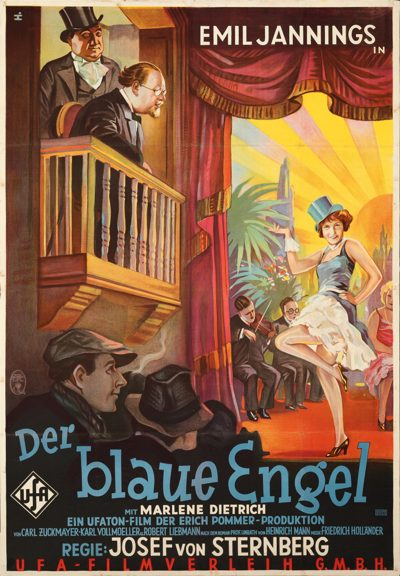

The Blue Angel
Studio: UFA
Starring: Emil Jannings, Marlene Dietrich, Kurt Gerron
Director: Josef von Sternberg
Writer: Karl Vollmoeller, Robert Liebmann, Heinrich Mann
Producer: Erich Pommer
The Blue Angel (German: Der blaue Engel) is a 1930 German musical comedy-drama film directed by Josef von Sternberg and starring Marlene Dietrich, Emil Jannings and Kurt Gerron. Written by Carl Zuckmayer, Karl Vollmöller and Robert Liebmann, with uncredited contributions by Sternberg, it is based on Heinrich Mann's 1905 novel Professor Unrat (Professor Filth) and set in an unspecified northern German port city.
Watch Online: Internet Archive
Trivia
- Based on Professor Unrat (novel by Heinrich Mann).
- By 1929, Sternberg had completed a number of films for Paramount, none of which were box-office successes.
- Jannings was the Oscar-winning star of Sternberg's 1928 film The Last Command, and had specially requested Sternberg's participation, despite an "early clash of temperaments" on the set.
- Though The Blue Angel and Morocco, both from 1930, are often cited as his first sound films, Sternberg had already directed "a startling experiment" in asynchronous sound techniques with his 1929 Thunderbolt.
Previous Showings
4 Runs • 2 Festivals
Original Billings: 2 runs (January 18, 1931 - September 20, 1959)
Original Run: January 18, 1931 (Sunday - Tuesday)
All runs on record (4):
- January 18, 1931 (Sunday - Tuesday)Marlene Dietrich, Emil Jannings
- September 20, 1959 (Sunday - Thursday)Curt Jurgens, May Britt
- September 29 - 30, 2016Vienna and the Moviesw/ M
- February 27 - 28, 2025Lubitsch, Mamoulian, Sternberg Three Great Directorsw/ The Devil Is a Woman